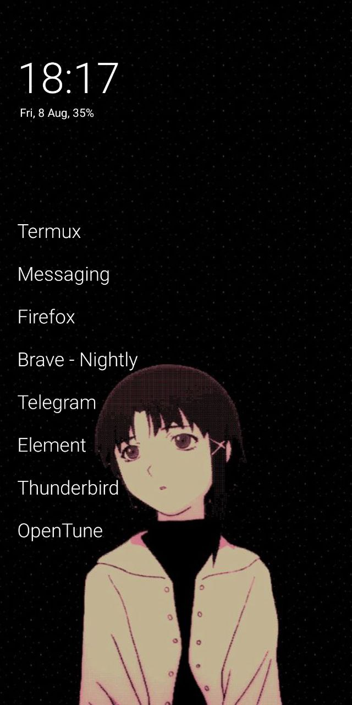

now | blog | wiki | recipes | bookmarks | contact | about | donate
* * * back home * * *
a sleeker android experience
2025-08-08
As you probably know if you have been following this site for a good little bit, I am a huge fan of minimal computing. I run wiredWM, our heavily opinionated fork of sway, on my computers, eschewing the traditional icons everywhere feel of the usual desktop metaphor, and I have recently taken to doing the same kind of thing on my mobile device.
On my phone, I have historically ran the default launcher that comes out of the box with LineageOS, Trebuchet, but over the last few months, I discovered Olauncher on F-Droid, and it has been quite wonderful to use on my device. I thought I would show it off a little bit here, as I love the sleek, minimal setup it provides on my phone. I already don't use my phone a lot since I am normally at my computer, but man, there is just something nice about how Olauncher has nothing but a clock and a small list of apps that you select to display on the homescreen, and nothing else. No widgets, not even status icons on the top of the display (unless you enable them) while the homescreen is in focus.
~ There is also a "Pro" version of Olauncher available for Android that comes with some more features such as adding widgets and notes to the homescreen, but I'm not that interested in these and wouldn't be able to if I were because I run a de-googled LineageOS, and have no way to do payments through Google Play. However, if you want such features and want to use the Pro version, certainly something to consider!
When you first install Olauncher, you can set it as your default homescreen on your device, and begin setting it up how you like it. You can do things like:
That's about it for getting the main screen setup. The other main functionality here is launching other apps not in your list through the launcher, and all you need to do to get to that list is swipe up, just like you would on Trebuchet to see the list of apps you don't have pinned to the main homescreen. By default, your keyboard will pop up, allowing you to begin typing the name of the app you want. When a singular match is found, that app will launch, saving you the trouble of tapping on it.
I have been evangelizing the 'minimal' style of living and computing for a long time, and I finally began applying that logic to my phone this year as well. I hardly ever use my phone anyway, but when I discovered Olauncher, I was immediately a fan of how it worked and how it looked. I can see it coming in handy for people who not only prefer and enjoy the much cleaner look it brings, but also a more 'distractionless' setup on their mobile devices.
Icons and widgets beckon you to interact with them, making you want to dive into this app, that app, a search bar, an email widget, whatever the case might be. With a setup such as Olauncher, it is simple to ignore those things, pin the things that matter most to your homescreen in a text-only fashion, and when you need those other applications, they are just a swipe-up away in the list.
This week, I have been reading Flow by Mihaly Csikszentmihalyi.